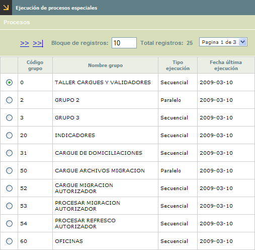
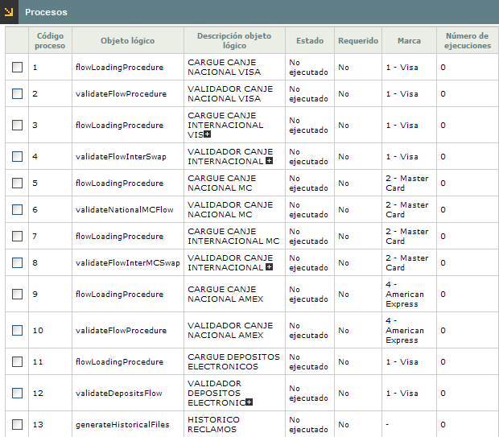

Ejecución de procesos especiales
Mediante este formulario se habilita la ejecución manual de los procesos que hayan sido definidos con frecuencia de ejecución 'Especial'.
Al ingresar a la opción, el formulario muestra todos aquellos procesos cuya fecha próxima ejecución corresponda con la fecha actual de proceso del aplicativo.

Descripción de campos
Código grupo |
Campo que muestra el código del grupo al que pertenecen los procesos a ejecutar. |
Nombre grupo |
En este campo se despliega el nombre que identifica a cada uno de los grupos de procesos. |
Tipo ejecución |
Campo que muestra si la ejecución de los procesos pertenecientes al grupo es Secuencial o en Paralelo, es decir, si se deben ejecutar uno a uno o es posible seleccionar varios de los procesos y enviarlos a ejecución simultáneamente. |
Fecha última ejecución |
Este campo contiene en formato YYYYMM-DD la fecha en la que se ejecutó por última vez cada uno de los grupos. |
El formulario cuenta con el hipervínculo procesos que despliega un formulario en el cual se muestran todos los procesos pertenecientes al grupo y que pueden ser ejecutados en la fecha y van acompañados de una casilla en la que se marcan aquellos que se desea ejecutar.

Descripción de campos
Código proceso |
Campo que muestra el código de cada uno de los procesos pertenecientes al grupo y que pueden ser marcados para ejecución. |
Objeto lógico |
En este campo se despliega el objeto que identifica cada uno de los procesos a ejecutar. |
Descripción objeto lógico |
Campo que contiene la descripción o nombre de cada objeto asociado al proceso. |
Estado |
Este campo señala el estado actual de cada proceso y que puede ser No ejecutado, Ejecución parcial, Ejecución total, Proceso pendiente o En ejecución. |
Requerido |
Campo en el que se señala si el proceso tiene la condición de obligatorio o no, lo que es evaluado por el sistema al momento de hacer el cambio de calendario para no permitir la acción hasta tanto todos los procesos obligatorios hayan sido lanzados y su estado sea Ejecución total. |
Marca |
En este campo se indica en caso de aplicar para el proceso, la marca para la cual va a ejecutar la acción. |
Número de ejecuciones |
Campo que muestra la cantidad de veces que el proceso ha sido ejecutados durante la fecha de proceso actual. Cuando se hace cambio de calendario, este campo se inicializa en cero para todos los procesos. |
Una vez seleccionados los procesos mediante el botón Iniciar se da comienzo a la ejecución de los mismos y una vez finalizada su ejecución bien sea sin error (Ejecución total) o con algún error (Ejecución parcial) se le envía un mail al correo registrado del usuario que lanzó la ejecución indicándole el resultado del mismo.